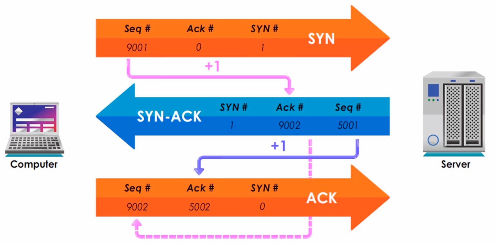
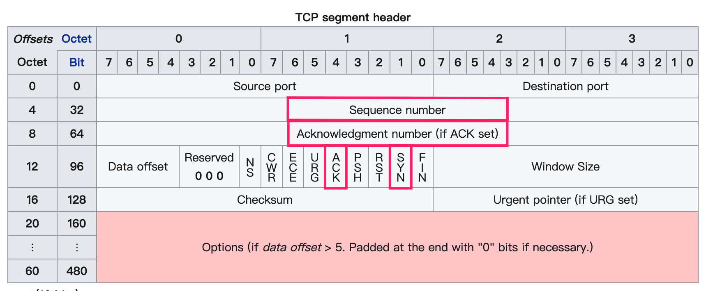
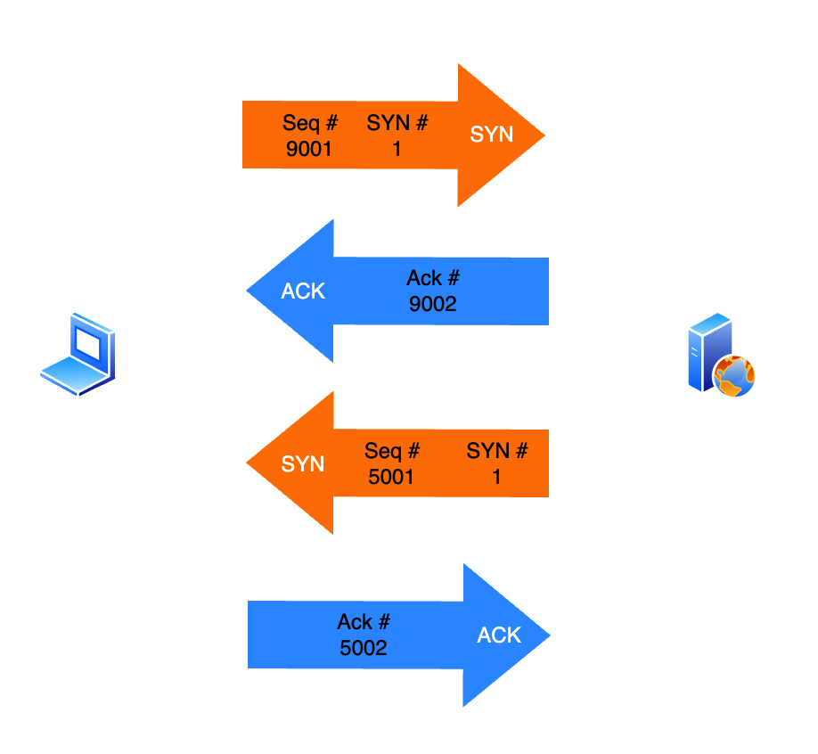
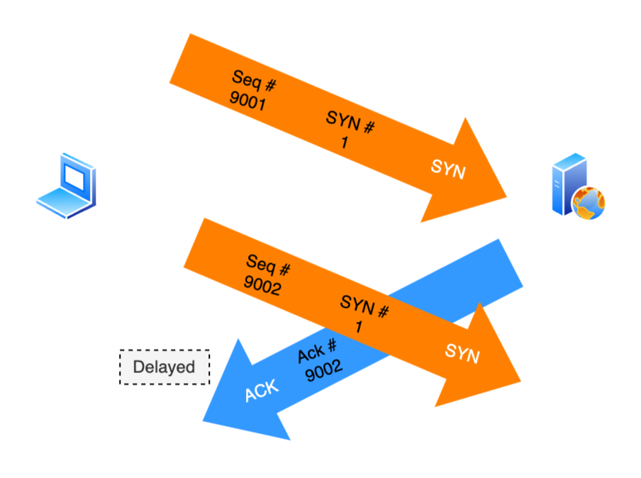
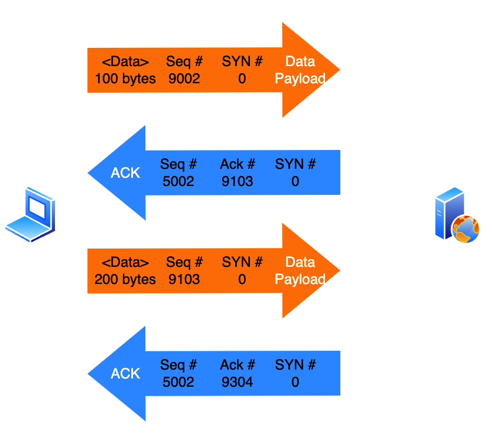
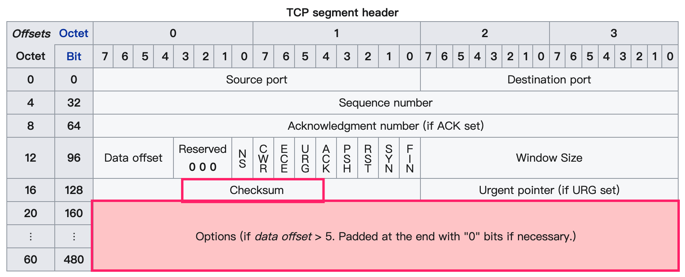
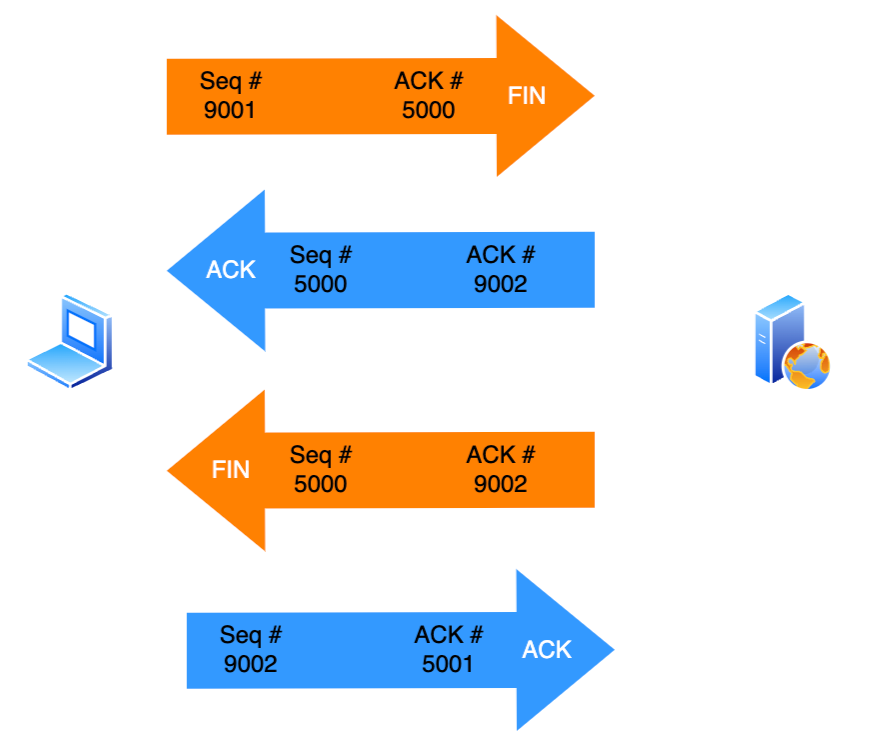
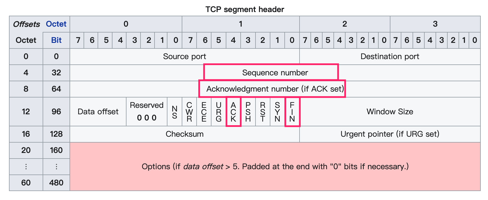

TCP的重要程度不言而喻。它的目的是为了实现一个可靠、有序、可错误检测的网络连接协议。
OK。任何一个事物都有生命周期，TCP连接亦然。所以它会有生成（建立连接）、发生（连接中）、死亡（关闭连接）。
TCP建立连接前准备
服务器会开放连接端口，并监听这个端口来建立连接。一旦监听的端口有连接的请求，就会开始建立连接。
建立连接
TCP需要三个步骤来建立连接（三次握手）。

🤔 但是，这些编号在TCP的报文中体现在哪里？

四次握手可不可以？
可以，但是没必要！
四次握手是这样的：

可以看到，四次相当于把ACK（应答）字段单独出来了，其实是没有必要的，浪费资源。
两次可不可以？
不可以。
原因有：
只有服务器有应答，客户端没有应答，意味着只有客户端能发送数据，而TCP协议是双工的；
假设1成立，即只单向通信；然而网络环境并不是理想中的稳定。当ACK出现延时，客户端新发一个SYN包，从而创建了一个新的不必要的连接，浪费序列号。情况如图：

数据传输
经过三次握手成功建立连接后，之后的请求都是数据的传输。
如何达到有序？
其实后续的传输，就类似于把三次握手拆成四次的过程：一个端发送数据后，另一端都要回复一个确认信号，来保证数据确实完整地达到对方。
方法如下：
- 经过三次握手后，即初始化了seq后，会得到一个初始的seq序列号，客户端发送第一个数据包，带上初始的seq；
- 服务器收到数据包后，需要回复一个应答（ACK），这个应答报文，也有一个初始化好的seq序列号，ACK字段就是客户端的seq + <数据字节数> + 1后的结果；
如此往复：

如何丢包重传？
如果在传输过程中，客户端在一定时间内没有收到服务器的应答（ACK），数据包需要重传。
Damage is handled by adding a checksum to each segment transmitted, checking it at the receiver, and discarding damaged segments. 
连接关闭
不管是建立一个连接，还是关闭一个连接，TCP都需要「确认」的操作。
A: 我传输完了，准备关了。
B: 我知道了，我这还没传完，稍等。
B: 我传输完了，我这关了。
A: 我知道了，我这也关了。

（FIN 其实是Finish的简称啦。）

「完」